Wrench-aware VLA reference model
Three camera views, language, and robot state are encoded by the VLA, while a recent wrench-history token is fused after visual-language encoding to predict reference actions and future wrench sequences.
Action-and-wrench references for online contact adaptation
1Meituan 2Beijing Institute of Technology 3Beihang University 4State Key Lab of Multimodal Artificial Intelligence Systems, Institute of Automation, CAS 5China University of Mining and Technology (Beijing)
Overview
Contact-rich manipulation can fail when visually similar states hide different physical conditions: partial insertion, incomplete latch engagement, or excessive grasp force. TORL-VLA uses tactile-derived wrench feedback as physical cues for these contact bottlenecks during execution.
A wrench-aware VLA predicts both action references and future wrench sequences. Lightweight stage-specific actor-critic refiners adapt those references online, while an intervention-censored critic prevents post-intervention success from being over-credited to preceding policy actions.
Method
TORL-VLA uses a frozen wrench-aware VLA as an action-and-wrench reference model, then updates only lightweight stage-specific actor-critic refiners during online adaptation.
Three camera views, language, and robot state are encoded by the VLA, while a recent wrench-history token is fused after visual-language encoding to predict reference actions and future wrench sequences.
The online refiner receives compact VLA tokens, Aref, Wref, current measured wrench, and recent wrench history for stage-specific actor-critic refinement.
Evaluates the refined policy on long-horizon latch-box manipulation with subtask success, full-task success, and 60-minute throughput.
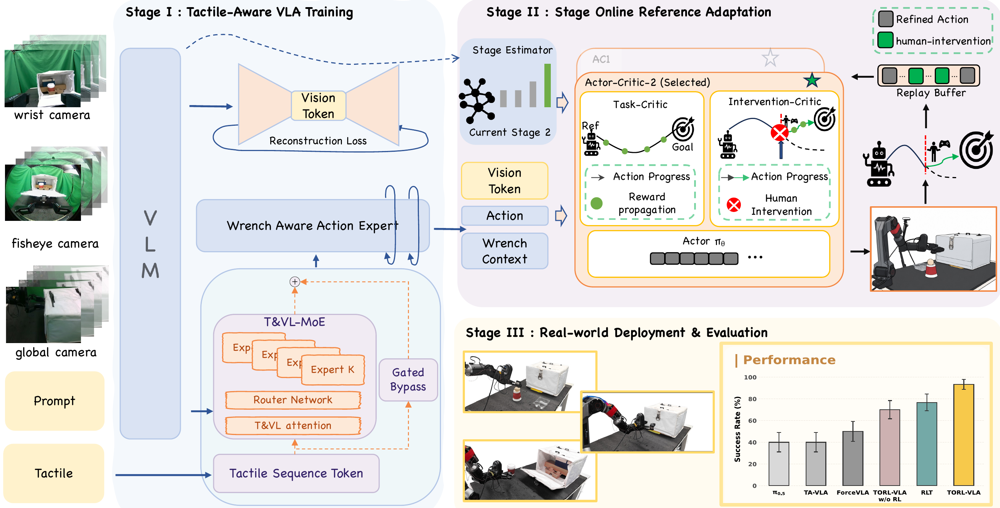
The reference model encodes recent tactile-derived wrench history as a compact token, fuses it after visual-language encoding, and jointly predicts action chunks and future wrench sequences.
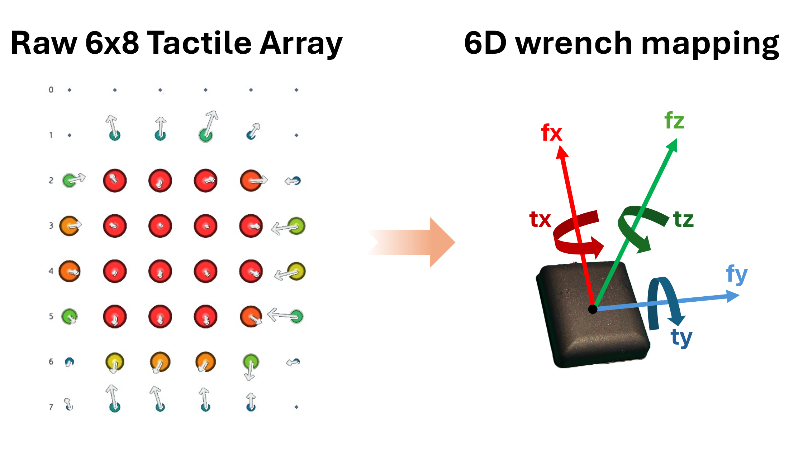
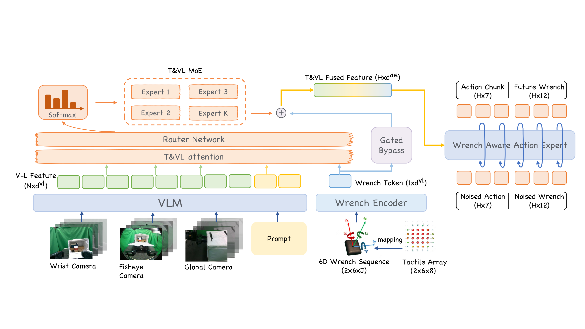
The frozen wrench-aware VLA remains the reference policy. Stage II refines only routed contact-critical windows, using measured wrench feedback and predicted future-wrench cues while keeping the reference model fixed.
The frozen wrench-aware VLA predicts a 50-step action sequence and future-wrench sequence; Stage II uses the first 10 steps as Aref and Wref before replanning.
The stage estimator maps each chunk to base execution or contact-window refinement. Contact bottlenecks activate the matching actor head.
Qtask estimates task return, while Qic prevents success after human correction from being assigned to the preceding policy chunk.
Experiments
The experiments evaluate contact-centric subtasks, full-task execution, 60-minute throughput, and component ablations under the same robot platform, action representation, demonstrations, and evaluation protocol.
The benchmark contains three contact-centric subtasks: Coffee Cup for tight insertion under partial occlusion, Latch for mechanical engagement, and Egg for fragile-object grasping and placement. Full-task evaluation completes all stages in one autonomous rollout.
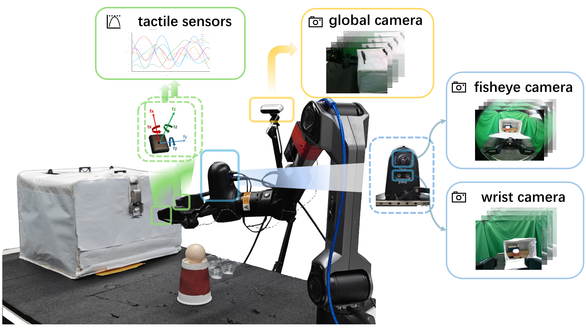
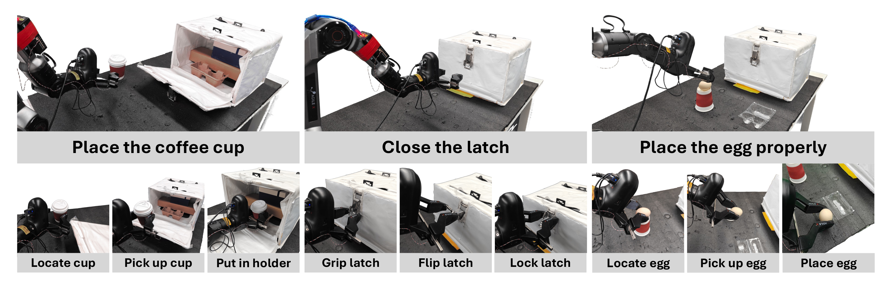
Success and failure are scored at the task-outcome level, not from internal wrench traces. Each method is evaluated over 30 autonomous trials for subtask and full-task success; final autonomous evaluation uses no human intervention, reset, safety-stop recovery, or online parameter update.
| Task | Success condition | Failure condition |
|---|---|---|
| Coffee Cup | Pick cup; insert into holder; release; cup remains upright and stable. | Holder miss; rim hang-up; partial insertion; large tilt; drop; unsafe contact. |
| Latch | Grip latch; flip toward locking direction; press into locked state; latch remains secured after release. | Missed latch; slip during flipping; missed locking edge; incomplete lock; rebound; unsafe force. |
| Egg | Grasp egg; transfer to holder; release; egg remains stable without visible damage. | Slip; drop; holder collision; rolling out after release; excessive grasping force; visible damage. |
| Full Task | Complete Coffee Cup, Latch, and Egg sequentially in one autonomous rollout. | Any subtask failure; human intervention; reset; safety stop; object drop; object damage. |
Each method is evaluated over 30 autonomous trials. TORL-VLA improves full-task completion from 12/30 with the base π0.5 policy to 28/30 and achieves the lowest average time over successful full-task trials.
| Method | Coffee Cup | Latch | Egg | Full-task success | Full-task average time |
|---|---|---|---|---|---|
| π0.5 | 18/30 | 15/30 | 20/30 | 12/30 | 199.65 s |
| TA-VLA | 19/30 | 17/30 | 20/30 | 12/30 | 204.45 s |
| ForceVLA | 21/30 | 20/30 | 22/30 | 15/30 | 195.34 s |
| TORL-VLA without RL | 25/30 | 23/30 | 25/30 | 21/30 | 191.91 s |
| RLT | 26/30 | 25/30 | 25/30 | 23/30 | 175.23 s |
| TORL-VLA | 30/30 | 29/30 | 30/30 | 28/30 | 165.45 s |
RLT denotes the matched reference-guided online refinement baseline; unlike TORL-VLA, it does not use wrench input during online refinement and does not include the intervention-censored critic.
Successful autonomous rollouts out of 30 trials.
Lower is better; computed over successful full-task trials.
Full-task success rate against successful full-task completions within a fixed 60-minute evaluation window.
Reference-model ablations isolate the wrench-history token, future-wrench prediction objective, MoE fusion, and physical bypass; online-adaptation ablations isolate wrench-context conditioning and the intervention-censored critic.
| Reference Model | Cup | Latch | Egg |
|---|---|---|---|
| Without wrench history token | 24/30 | 22/30 | 22/30 |
| Without future wrench prediction | 25/30 | 21/30 | 24/30 |
| Without MoE fusion | 18/30 | 17/30 | 19/30 |
| Without physical bypass | 23/30 | 20/30 | 21/30 |
| Full reference, without RL | 25/30 | 23/30 | 25/30 |
| Online Adaptation | Cup | Latch | Egg |
|---|---|---|---|
| Without wrench context | 27/30 | 27/30 | 26/30 |
| Without IC critic | 27/30 | 26/30 | 28/30 |
| Full TORL-VLA | 30/30 | 29/30 | 30/30 |
All online-adaptation variants use the same frozen wrench-aware reference model and matched online interaction budget. Removing wrench context or the IC critic slows adaptation and reduces final performance on the Latch stage.
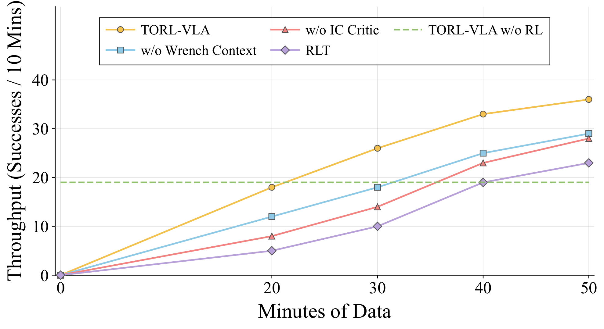
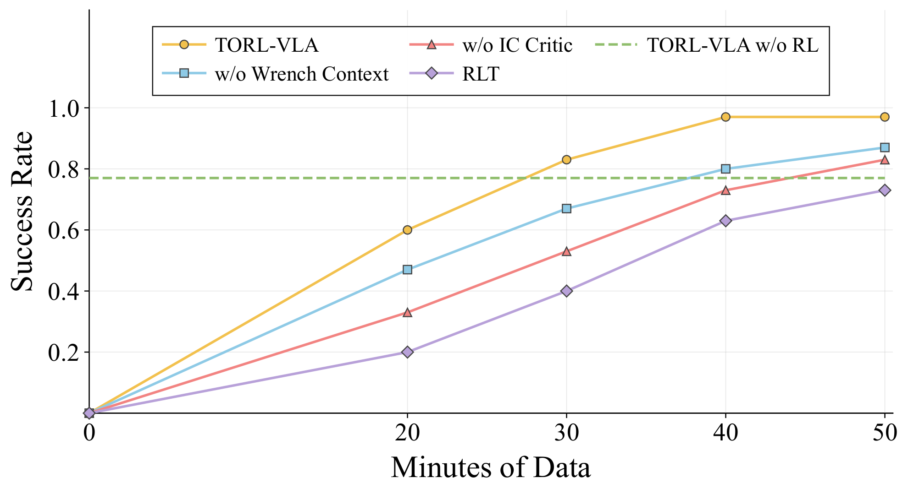
Supplementary Experiments
Beyond the latch-box benchmark, we add seven supplementary real-robot contact-rich tasks. On five tasks, we compare the base π0.5 policy with a wrench-aware reference model that incorporates tactile-derived wrench observations and jointly predicts action references with future-wrench cues. On Block Placement and Tube Placement, where fine contact adjustment after initial contact is more critical, we further evaluate online RL refinement on top of the wrench-aware reference.
These five tasks evaluate the wrench-aware reference model before online RL. The comparison focuses on whether tactile-derived wrench conditioning and future-wrench prediction improve contact-aware VLA execution without online refinement.
Reorienting the bottle requires contact-aware direction control after the gripper establishes contact with the object.
Base policy succeeds on many trials but remains sensitive to final contact direction.
Wrench-aware action references improve reorientation consistency.
Nested-cup friction requires extracting only the top cup without slipping or lifting multiple cups together.
The base policy applies excessive grasping force, preventing the nested cups from being separated.
Wrench-aware reference signals help regulate the contact force appropriately, allowing the nested cups to separate.
Ping-pong ball grasping tests force-sensitive handling of a spherical object that can deform under excessive grip force.
Base policy already reaches high success but must avoid over-compressing the ball.
Wrench-aware references preserve high success on this force-sensitive grasp.
Open jelly cups require gentle contact: excessive force can squeeze the jelly out, while insufficient force can cause slip.
Base policy is sensitive to slip and excessive squeezing during grasping.
Wrench-aware references improve gentle handling of the open jelly cup.
Whiteboard erasing evaluates sustained contact while the end effector moves along the surface.
The base policy already solves this visually observable wiping task reliably.
Wrench-aware reference signals preserve the same reliable wiping performance.
Block Placement and Tube Placement require fine contact adjustment after initial contact. We use them to evaluate the lightweight online RL refiner, comparing π0.5, the wrench-aware reference model, and the online-refined policy.
Block placement requires fine contact-guided alignment before the object can be released stably.
The table reports task success rate and average completion time for π0.5, the wrench-aware reference model, and Wrench + online RL.
Base policy can leave final alignment errors.
Wrench-aware reference uses tactile-derived wrench cues for contact-aware placement.
Online refinement corrects contact alignment before release.
Tube placement requires aligning orientation and position with a narrow holder after initial contact.
The table reports task success rate and average completion time for π0.5, the wrench-aware reference model, and Wrench + online RL.
Base policy can leave angular or translational placement errors.
Wrench-aware reference uses tactile-derived wrench cues for contact-aware placement.
Online refinement makes the final placement more reliable and faster.
Analysis & Details
These materials inspect measured wrench evolution, future-wrench prediction, intervention-censored critic behavior, stage routing, and deployment implementation. They are process diagnostics and setup details, not additional final autonomous evaluation metrics.
The measured right-fingertip wrench changes continuously during latch and cup contact. In the cup task, the gripper maintains normal force fz to hold the cup while applying downward force fy during insertion.
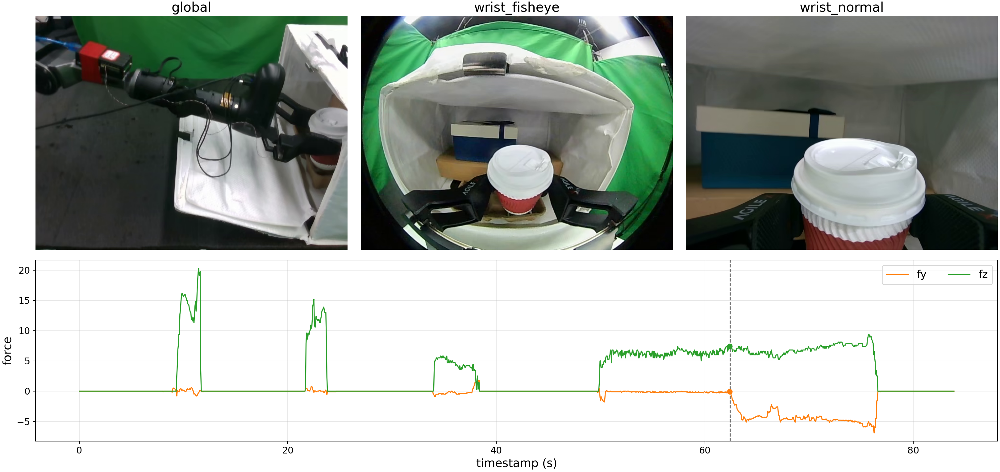
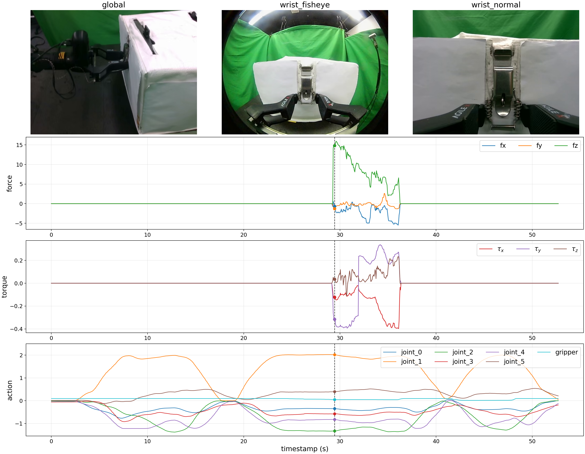
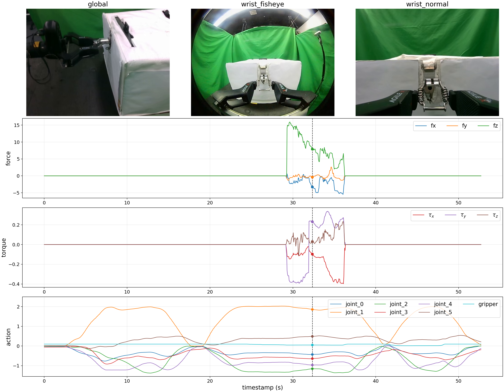
The future-wrench head predicts contact trends over the next 50 action steps. The examples cover mechanism contact, environmental insertion contact, and delicate-object contact, pairing current and future observations with predicted and measured wrench norms.
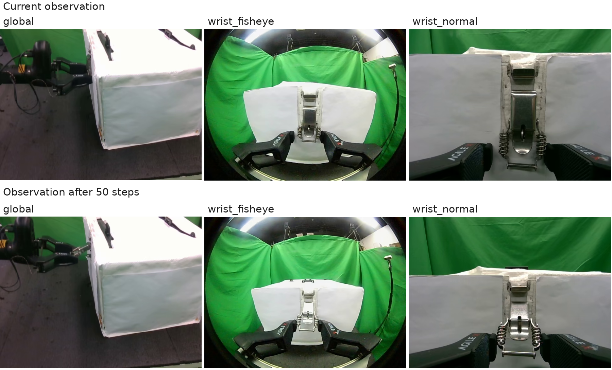
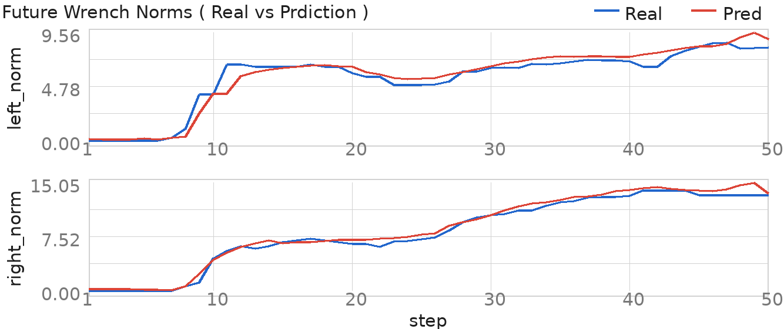
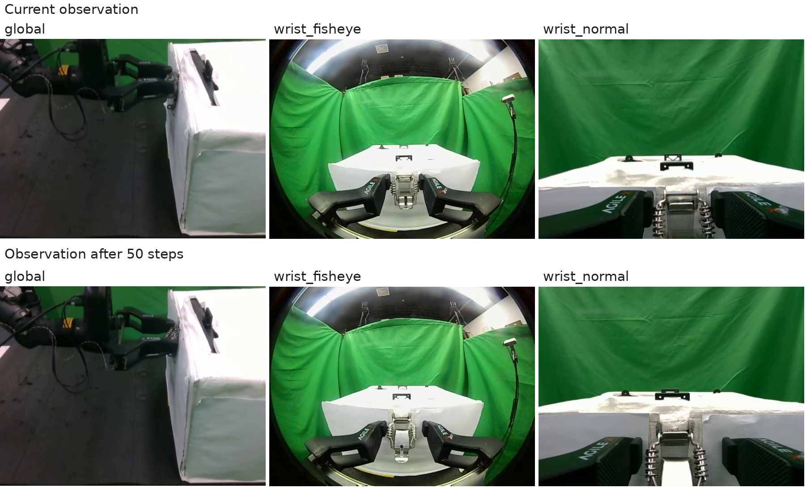
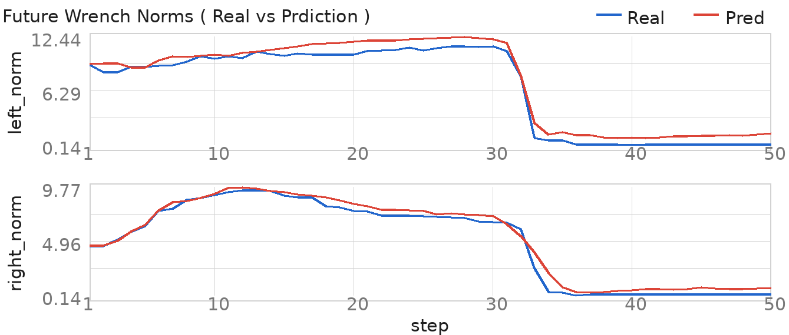
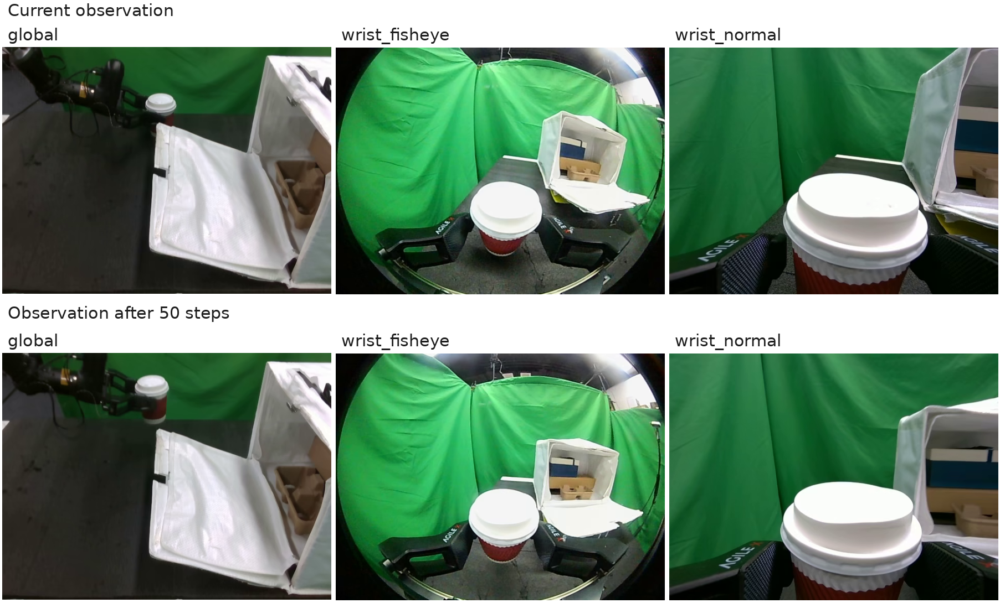
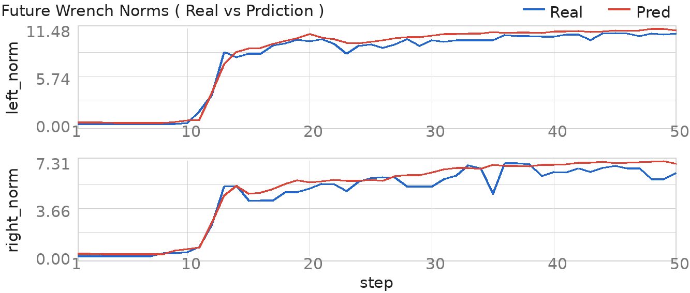
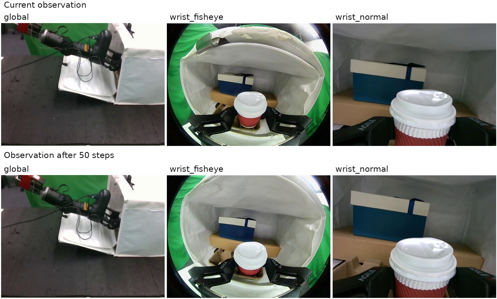
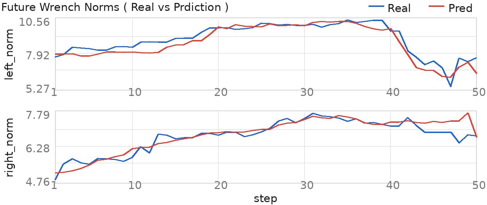
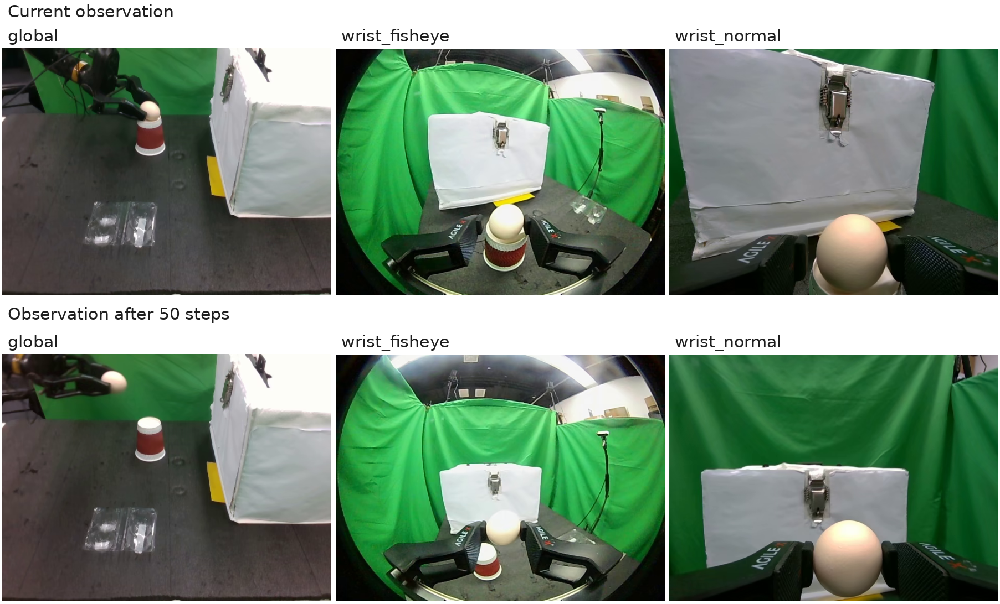
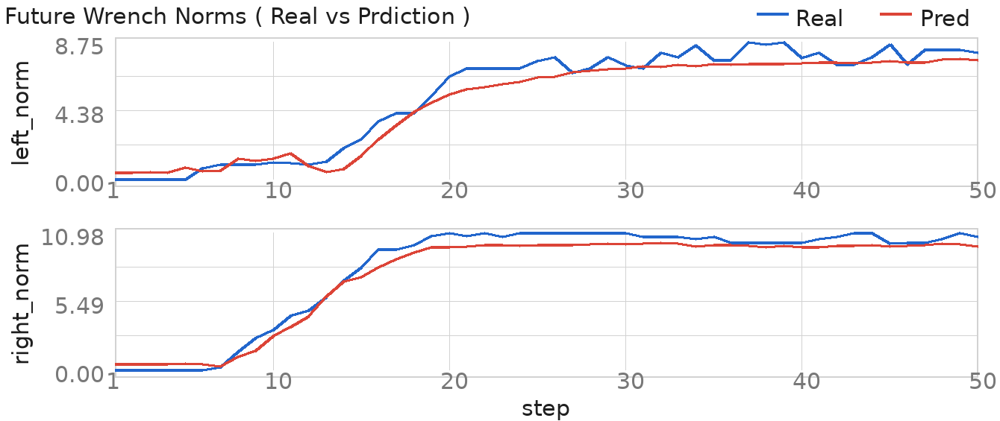
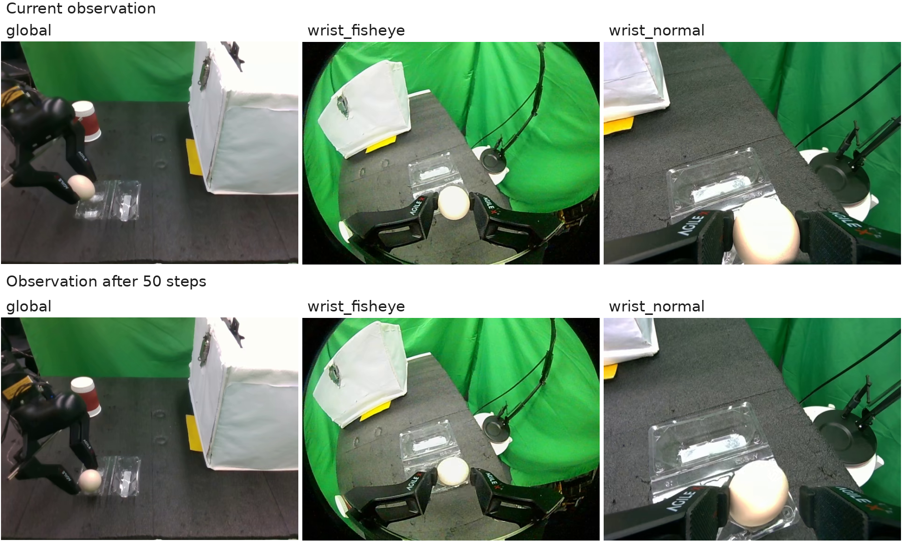
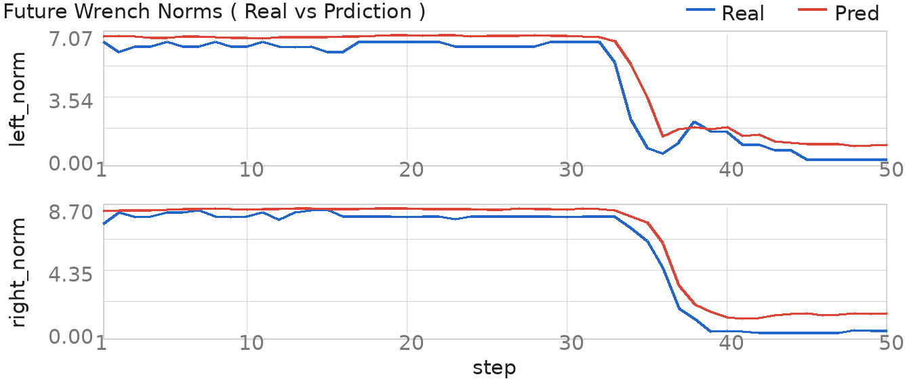
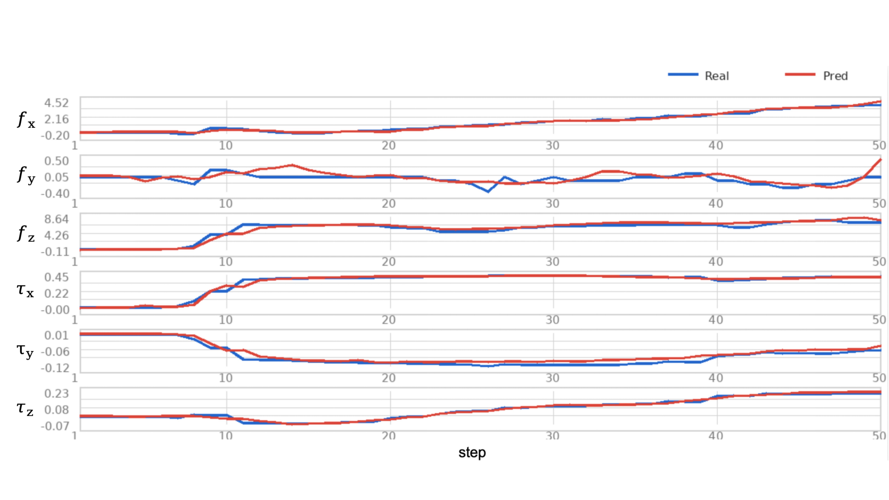
These process-level analyses inspect the Latch-Lock contact window. They test whether Qic captures intervention-risk signals and whether the learned actor moves away from low-IC-value actions on policy-to-human boundary contexts.
| Boundary distribution | Value |
|---|---|
| Episodes with replay | 162 |
| Boundary contexts | 165 |
| Episodes ≥ 1 boundary | 125 / 162 = 77.2% |
| Episodes ≥ 2 boundaries | 32 / 162 = 19.8% |
| Episodes ≥ 3 boundaries | 8 / 162 = 4.9% |
| Mean / median per episode | 1.02 / 1 |
| 90th percentile / maximum | 2 / 3 |
| Actor behavior | Value |
|---|---|
| Logged Qic(c, Adata) | -1.003 |
| Reference Qic(c, Aref) | -0.573 |
| Final actor Qic(c, Aphi) | -0.271 |
| Delta Qic: actor vs. reference | +0.301 |
| Delta Qic: actor vs. logged data | +0.731 |
| IC-hinge-active boundary contexts | 21 / 165 = 12.73% |
| Critic / Action | Clean Mean | Boundary Mean | Clean-Boundary | AUC |
|---|---|---|---|---|
| Qic(c, Adata) | 0.073 | -1.003 | 1.076 | 0.999 |
| Qic(c, Aref) | -0.007 | -0.573 | 0.565 | 0.913 |
| Qic(c, Aphi) | 0.091 | -0.271 | 0.363 | 0.806 |
| Qtask(c, Adata) | 0.333 | 0.247 | 0.086 | 0.621 |
| Qtask(c, Aref) | 0.316 | 0.241 | 0.074 | 0.626 |
| Qtask(c, Aphi) | 0.351 | 0.272 | 0.079 | 0.618 |
| Actor training trend | Value |
|---|---|
| IC-hinge-active contexts at 10k | 89 / 165 = 53.94% |
| IC-hinge-active contexts at 20k | 66 / 165 = 40.00% |
| IC-hinge-active contexts at final 33k | 21 / 165 = 12.73% |
| 10k active contexts resolved by final actor | 71 / 89 = 79.8% |
| Mean margin improvement | +0.421 |
| Variant / Window | Human-Controlled Steps | Average Interventions | Intervention-Free Episodes |
|---|---|---|---|
| Without IC critic, last 100 ep. | 27.78% | 13.40 | 11.0% |
| Full model, last 100 ep. | 25.32% | 10.68 | 29.0% |
| Without IC critic, last 50 ep. | 25.42% | 13.10 | 12.0% |
| Full model, last 50 ep. | 18.12% | 7.48 | 40.0% |
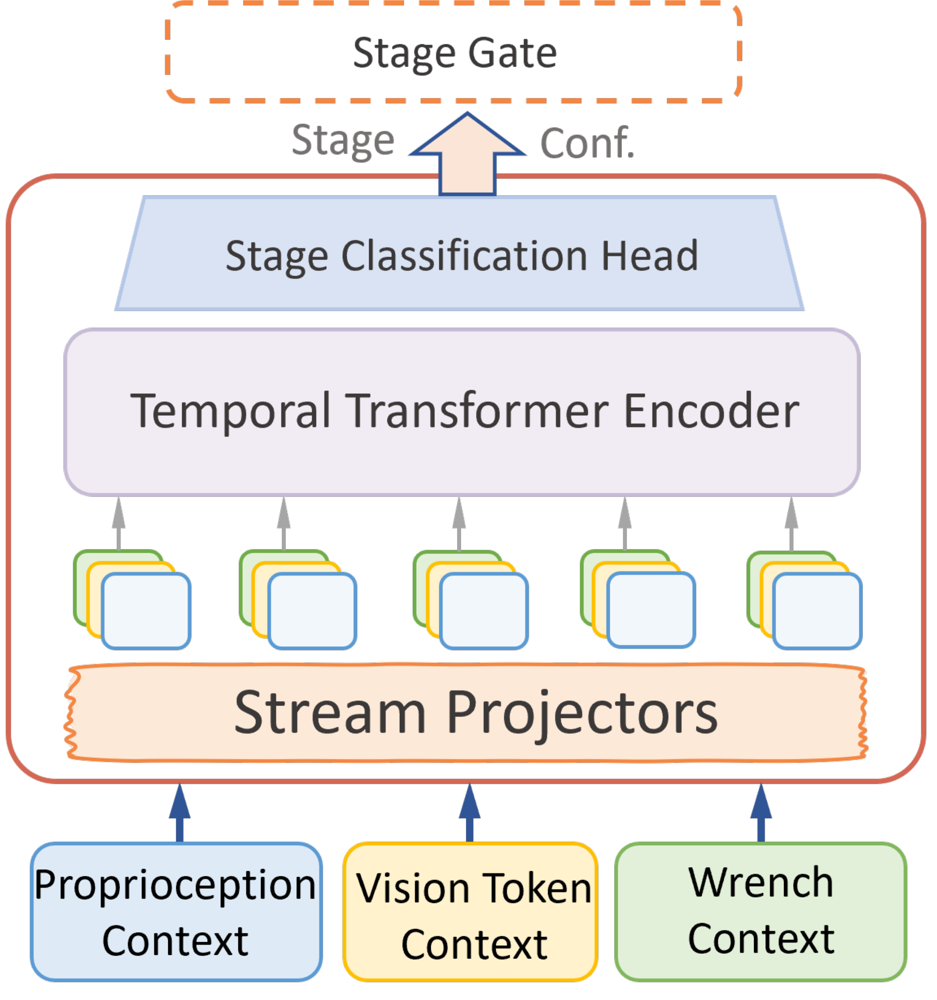
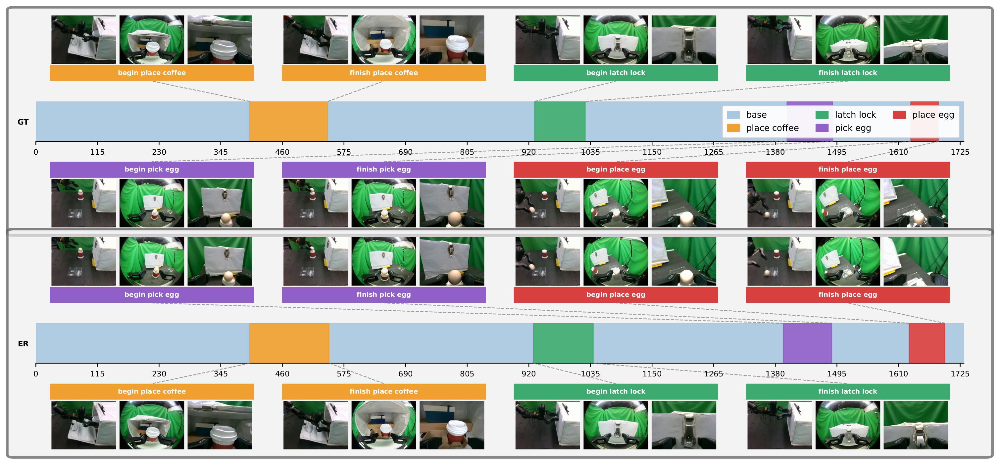
| Reference / execution | Value |
|---|---|
| Reference horizon H | 50 |
| Executed horizon K | 10 |
| Action / wrench dimension | 7 / 12 |
| Robot command representation | delta chunk |
| Control frequency | 20 Hz |
| Replanning interval | 0.5 s |
| Wrench history length / window | 10 / 2.0 s |
| Future wrench horizon / loss | 50 / 0.3 |
| VLA token dimension | 2048 |
| Online learning / AC | Value |
|---|---|
| Discount factor gamma | 0.99 |
| Update-to-data ratio | 5 |
| Critic / actor update frequency | every step / every 2 steps |
| Target-network EMA tau | 0.005 |
| Actor snapshot / checkpoint interval | 100 / 1000 steps |
| Intervention cost / threshold | 1.0 / 0.5 |
| Warmup replay / updates | 300 chunks / 5k |
| Hidden dimension | 256 |
| AC layers | Cup 3/3, Egg grasp 3/3, Egg place 3/3, Latch 4/4 |
| Module / Query | Timed Calls | Mean Latency |
|---|---|---|
| Base π0.5 policy query (comparison) | 30 | 94.7 ms |
| TORL-VLA wrench-aware reference query | 30 | 100.2 ms |
| Stage estimator routing | 30 | 1.7 ms |
| Stage-specific online actor | 30 | 1.1 ms |
| End-to-end TORL-VLA query with actor refinement | 30 | 103.0 ms |
Latency is measured over warm-call policy queries on a single RTX 4090. The end-to-end TORL-VLA row is measured directly on the actor-refinement route, not obtained by summing separately timed modules.
Citation
TORL-VLA code will be released. Our earlier open-source RLT reproduction, Yyshadow/openpi-RLT, is already available for readers interested in reference-guided online RL.
@article{zheng2026torlvla,
title = {TORL-VLA: Tactile Guided Online Reinforcement Learning for Contact-Rich Manipulation},
author = {Zheng, Huaihang and Yang, Yi and Ma, Kai and Xu, Shenglin and Xie, Tian and Li, Guozheng and Wang, Xiangyu and Ma, Yiren and Liu, Si and Mao, Yinian and Liu, Baoxu},
year = {2026},
journal = {arXiv preprint arXiv:2606.09337}
}